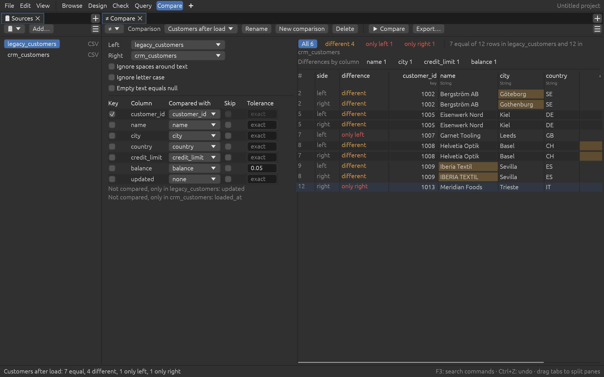

Comparing two sources
A target against its source after a load: which rows differ, and which only one side has.
A comparison answers one question after a migration: does the target hold the same rows as the source? It reads two sources of the project, matches their rows, and shows the rows that differ and the rows only one side has.
Both sources are only read, the way a preview reads them. A comparison never changes either side and never makes statements that would; the only thing it can write is a report file.

Setting one up
Open the Compare workspace, or switch any pane to Compare (≠), and press New comparison.
- Left and Right are sources of the project. A saved query is a source, so two query results compare the same way as two tables.
- Key: tick the columns that say which rows belong together. They are ticked for you when the left source's schema, or a key file of the project, names a key. Without a key, whole rows are matched: a row is equal to any one row with the same values.
- Compared with: columns pair by name, ignoring letter case. Pick another column where the name changed.
- Skip leaves a column out. It still shows in the result, greyed.
- Tolerance: how far two numbers may lie apart and still be equal.
0.01is an absolute difference.2%is a share of the left value, so 100 equals anything from 98 to 102. Empty means exact. - Ignore spaces around text, ignore letter case, and empty text equals null apply to every column, the key included.
The comparison is saved in the project, and every change to it can be undone and shows in the Command log.
What counts as equal
| Numbers | Compared as exact decimals: 1.50 equals 1.5 and 1e2 equals 100. A column is compared as numbers when either side is a number column, or when it has a tolerance. Text with leading zeros, such as 007, is a code and stays text. |
| Dates | Compared as dates when both columns are date columns, whatever pattern each is written in. |
| Text | Exactly, unless the options say otherwise. |
| Nulls | Null equals null. Null differs from empty text unless "empty text equals null" is on. |
| Row order | Ignored. |
| Repeated keys | A key that occurs more than once on a side cannot be paired safely. Its rows are listed as "repeated key" and not compared. |
| Columns on one side only | Listed under the settings and not compared. |
Without a key, tolerances do not apply, since rows are matched by their values.
Reading the result
Compare reads both sources again and compares them. The line above the table counts the rows that are equal, different, only left, only right, and with a repeated key; click a count to see only those rows. "Differences by column" counts per column; click one to see only the rows that differ there.
A row that is on both sides takes two lines, left over right, with the cells that differ marked. Cells can be picked and copied as in every table.
Export… writes the rows that are not equal to a file. The ending picks the format: .csv, .tsv, .json, .jsonl or .xlsx.
From the command line
dbdb-cli compare project.json "Customers after load"
dbdb-cli compare project.json "Customers after load" --env production \
--report differences.xlsxIt prints the rows that are not equal (--limit sets how many) and a summary, and exits with 0 when both sides are the same, 1 when they are not and 2 when it could not compare, so a migration script can stop on it.
As commands
{"command": "add_comparison", "comparison": {
"name": "Customers after load",
"left": "legacy_customers",
"right": "crm_customers",
"key": ["customer_id"],
"columns": [
{"left": "balance", "tolerance": "0.05"},
{"left": "surname", "right": "last_name"},
{"left": "updated", "exclude": true}
],
"trim": true
}}update_comparison replaces the comparison of the same name, rename_comparison takes from and to, and remove_comparison a name. The MCP server runs a saved comparison with its compare tool, also when it is started with --read-only.